Basic Studio Tutorial
This tutorial walks you through how to use Anypoint Studio to build a simple HTTP request-response application. After creating and running the example locally, you are able to apply what you learn to create more complex applications.
Prerequisites
This tutorial assumes that you have downloaded and installed Anypoint Studio. If you do not have any previous experience with Eclipse or an Eclipse-based IDE, you can review the brief introduction to the Anypoint Studio interface.
Goals
This tutorial covers these tasks:
| # | Task | Section |
|---|---|---|
1 |
Launch Anypoint Studio |
|
2 |
Create a simple application that displays a message in a browser |
|
3 |
Learn about logging |
|
4 |
Learn about flows in your application |
|
5 |
Add more features to your application |
Launching Studio
If you launched Studio as part of the installation process, and it is now running, skip the rest of this section and proceed directly to Creating a New Project.
-
Navigate to the directory on your local drive in which you installed Studio.
-
Double-click the executable file to launch Studio.
-
AnypointStudio.exein Windows -
AnypointStudio.appin Mac OS -
AnypointStudioin Linux
-
-
When Studio displays the Workspace Launcher dialog, click OK to accept the default workspace.
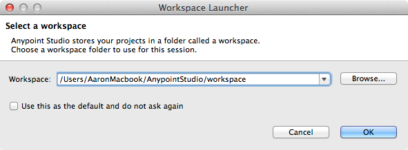 -
If this is the first time you have launched Studio, you see a Welcome screen. Click Create a Project to dismiss the screen and jump straight to the New Mule Project wizard.
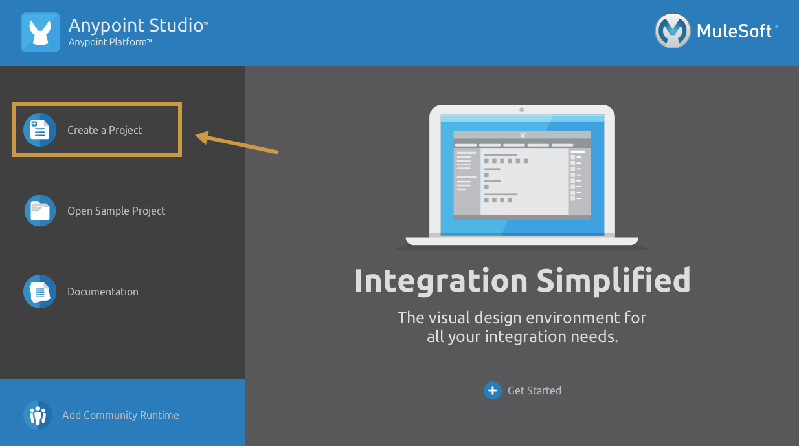
Creating a New Project
-
If the New Mule Project screen is not open, click File > New > Mule Project.
Studio opens the New Mule Project wizard.
-
Fill in the Project Name field with the value
Basic Tutorial.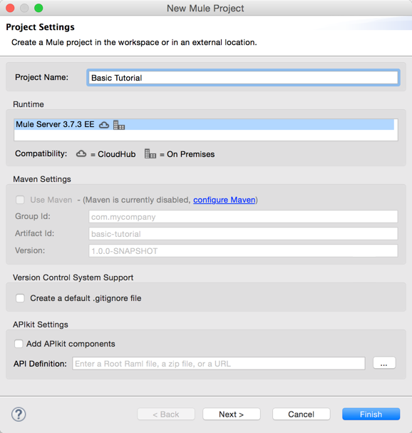 -
Click Finish to create the project.
The Studio UI, which has the following main sections, appears:
The blue area in the center is the canvas where you build a visual representation of your Mule program by dragging building blocks from the palette outlined in green to the canvas. For more information about how to use the visual editor, see this quick overview.
At the bottom of the canvas are Message Flow and Configuration XML tabs for alternating between visual and XML editing of the application.
On the Global Elements tab you set properties for configuration elements having global scope, such as the HTTP Listener Configuration introduced later.
More on the XML File
When you create a Mule Project, Studio creates an XML file in the src/main/app folder, which appears in
the Package Explorer. This file stores flow information for the visual editor. Studio derives the file name basic_tutorial.xml from the project name, in this case "Basic Tutorial".
The mule-project.xml file at the bottom of the Package Explorer is the Mule project descriptor file. Open this
file to change the project runtime, set or edit environment variables, or edit the project description.
After creating a project, you can commit this file, along with the <project_name>.xml file to your source
control systems to avoid errors when sharing your project.
Constructing an Application
In this section of the tutorial, you build an application that displays a message in the browser.
This section uses these building blocks:
Allows your Mule application to connect to Web resources through the HTTP or HTTPS protocol. Find this in the Connectors section of the palette. |
|
Modifies your payload into a "Hello, World" message. Find this in the Transformers section of the palette. |
|
Tip: Use Studio Search
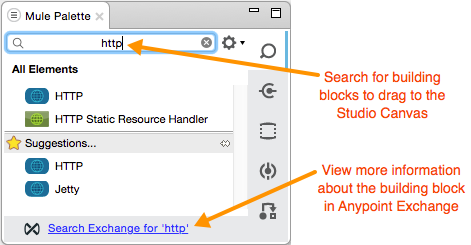
Note: Building blocks in each category of the palette are organized alphabetically. To avoid scrolling, use the search tool in the upper right corner of the palette to find the building blocks that you want more quickly. You can also use this area to view more information about the building block in Anypoint Exchange. |
-
Search for
httpin the palette and drag the HTTP connector to the canvas. This action creates the flow named basic_tutorialFlow.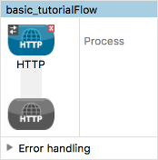 -
Search for
set payloadand drag the Set Payload transformer to the Process section of the flow.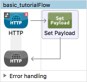 -
Select the HTTP connector in the flow. In Basic Settings in the properties editor, change the Path to * (asterisk) to allow any path in the browser. For example, with the * setting in place, you can use a browser address like
0.0.0.0:8081/any path. You need this flexibility later when you extend the application.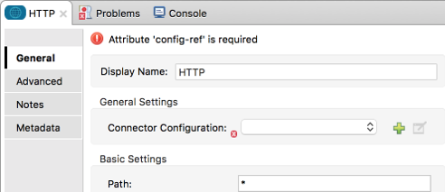 -
In General Settings, click the green plus sign to the right of Connector Configuration:
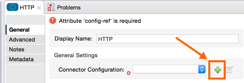The Global Element Properties dialog appears:
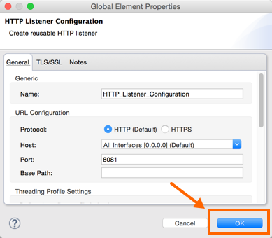 -
Click OK to accept the defaults: Host
0.0.0.0and Port8081.Later, you use the host IP address and port number
0.0.0.0:8081in a browser to view the application response. -
Click the Set Payload transformer to set its properties, and in the Value field, replace the
\#[]value withHello MuleSoft: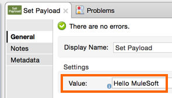With just a few clicks, you have created an application.
Verifying That Your Application Works
To test the application:
-
Click the top project name in Package Explorer and click Run > Run As > Mule Application:
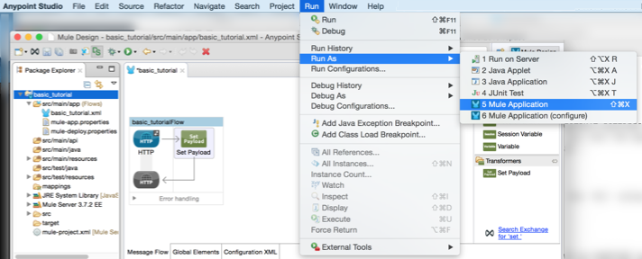Click OK to save and launch the application.
The console lists output that looks something like this:
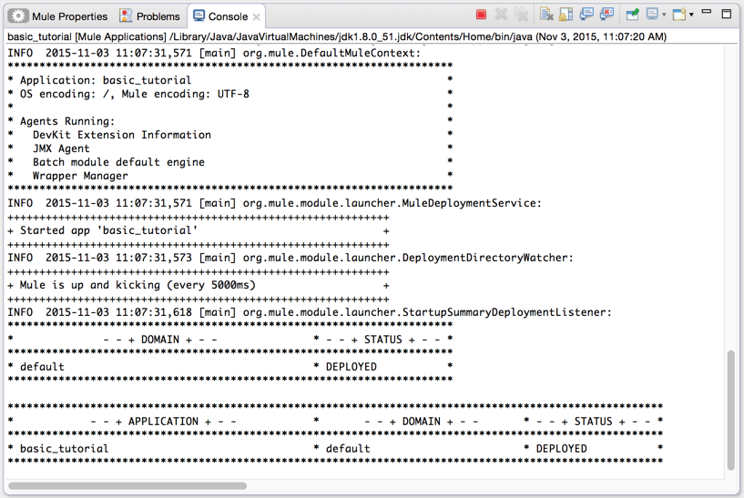 -
Open a browser and type the address
0.0.0.0:8081. You see the payload, Hello MuleSoft: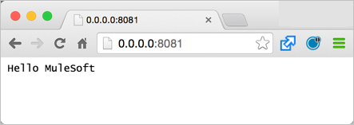
Next, learn about logging.
Adding Logging
As soon as you run the application, Studio starts logging error, warning, tracing, and debugging information. Studio uses Apache log4j 2-based logging. You can use the default log4j 2 settings or modify settings in the log4j2.xml file located in the project’s src/main/resources path. You can view this path in the Package Explorer.
The palette contains a Logger component that you can include in your flow to manage logging. Default logging occurs whether you add a Logger or not.
To add a Logger component:
-
Search for
login the palette. -
Drag the Logger to the right of Set Payload:
In the next section, you change the default logger settings, but for now, just accept the defaults.
Where does the logging output appear?
The log4j2.xml file defines where the logging output appears:
<Appenders>
<RollingFile name="file" fileName="${sys:mule.home}${sys:file.separator}logs${sys:file.separator}basic_tutorial.log"
filePattern="${sys:mule.home}${sys:file.separator}logs${sys:file.separator}basic_tutorial-%i.log">
<PatternLayout pattern="%d [%t] %-5p %c - %m%n" />
<SizeBasedTriggeringPolicy size="10 MB" />
<DefaultRolloverStrategy max="10"/>
</RollingFile>
</Appenders>This code specifies the location of the log in the .mule directory of your Studio workspace as follows:
-
The
mule.homevalue is the path to your workspace. -
The
file.separatorvalue is a backslash (\) in Windows or a forward slash in Mac and Linux. -
The base file name is the project name and the extension is
.log.
For example on a Mac, the location of the basic_tutorial.log
is /Users/me/AnypointStudio/workspace/basic_tutorial/.mule/logs.
The following snippet shows the first few entries in the basic_tutorial.log:
2016-01-03 11:07:28,951 [main] INFO org.mule.module.launcher.application.DefaultMuleApplication -
++++++++++++++++++++++++++++++++++++++++++++++++++++++++++++
+ Initializing app 'basic_tutorial' +
++++++++++++++++++++++++++++++++++++++++++++++++++++++++++++
2016-01-03 11:07:29,065 [main] INFO org.mule.lifecycle.AbstractLifecycleManager - Initialising RegistryBroker
2016-01-03 11:07:29,184 [main] INFO org.mule.module.extension.internal.manager.DefaultExtensionManager - Starting discovery of extensions
2016-01-03 11:07:29,313 [main] INFO org.mule.module.extension.internal.manager.DefaultExtensionManager - Discovered 1 extensions
2016-01-03 11:07:29,313 [main] INFO org.mule.module.extension.internal.manager.DefaultExtensionManager - Registering extension validation (version 3.7)After running the application, the following default Info: Basic Tutorial Logger component message value appears in the log:
2016-01-03 10:26:31,842 [[basic_tutorial].HTTP_Listener_Configuration.worker.01] INFO org.mule.api.processor.LoggerMessageProcessor - Info: Basic Tutorial
More information on logging is at Logging in Mule and Logging.
Working With Flows
Most Mule elements provide configuration options, which you can set in one of the following ways:
-
Using the building block Properties tabs in Studio’s visual editor
-
Using XML code in Studio’s XML editor
Use the Configuration XML at the bottom of the canvas to switch to the XML editor view.
XML tags representing the flow have a flow element parent. The child elements represent the components you
dragged to your canvas from the palette.
The doc:name attribute on each element corresponds to the display name that appears below the building
block icon on the Message Flow canvas. The http:listener element path property is * and its property
config-ref points to the Configuration Element that you created.
The Configuration Element sits above the flow you built, outside it, as it could potentially be referenced by other HTTP connectors on other flows. The configurations you set in the Configuration Element and those in the XML view of an element are the same.
Studio’s two-way editor automatically updates the configuration as you switch back and forth. For example, if
in the XML configuration view you change the value of the port
attribute on the http-listener-config, this change is reflected in the visual editor when you click Message Flow
to switch back to the visual editor.
Extending Your Application
At this point, your application simply returns the payload literal, Hello MuleSoft, as an HTTP response in a browser. Revise the application to perform the following actions:
-
Log a unique message ID that Mule automatically assigns to each message that passes through a flow.
-
Create a dynamic, inbound message payload that appears in your browser when you send a request to the application.
-
For each request, write a file to a specified location that contains the dynamic inbound message.
You need to add another message processor to your flow to direct Mule to write a payload to a file. Use a Mule expression to log and use a unique message ID. The following procedure provides step-by-step instructions:
-
Click the existing Logger component in your flow to open the properties editor.
-
Enter the following text and expression in the Message field to read:
Current path is #[message.inboundProperties.'http.request.path']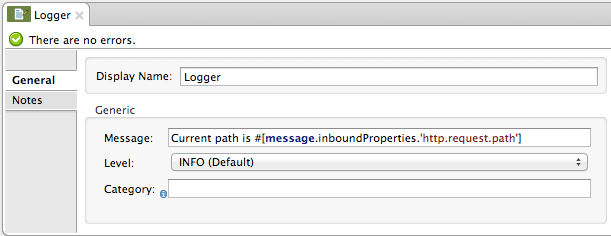The String
[message.inboundProperties.'http.request.path']is a Mule expression that evaluates to the requested property of the message as it passes this point in the flow. Including this message here instructs Mule to log this information in the application log files, which can be useful in more complex use cases, when you need to track the payload at different points in your flow. -
Click the Set Payload building block to open its properties editor.
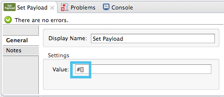 -
In the Value field, enter the following dynamic expression:
#['Hello, ' + message.inboundProperties.'http.request.path' + '. Today is ' + server.dateTime.format('dd/MM/yy') + '.' ]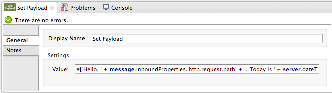The Value field supports Mule expressions, as well as literals such as Hello MuleSoft, which you used previously. Mule expressions are formatted using square brackets prefaced with a #,
#[]. If you enter a Mule expression here, Mule evaluates it at runtime and returns or uses the results for further processing.The message.inboundProperties.'http.request.path'andserver.dateTime.format('dd/MM/yy')are both Mule expressions. Because you are entering the expressions within a larger Mule expression, the[]syntax is not required around these individual expressions. Anything that you enter inside of the[]syntax that is not a Mule expression must be enclosed in quotation marks. Mule interprets an expression in quotation marks as a string. -
Move the Logger component to the left of Set Payload transformer.
-
Drag and drop a File endpoint onto your canvas immediately after the Set Payload transformer.
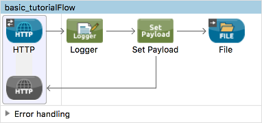 -
Click the File endpoint to open the properties editor, and browse to set the Path for saving the file. For example:
/Users/<me>/Downloads. -
Enter a File Name/Pattern that defines the file name and type, as follows:
#[message.id].txt#[message.id]is the Mule expression that resolves to the unique message ID of the current message. -
View the code of the revised application:
<?xml version="1.0" encoding="UTF-8"?> <mule xmlns:file="http://www.mulesoft.org/schema/mule/file" xmlns:http="http://www.mulesoft.org/schema/mule/http" xmlns:tracking="http://www.mulesoft.org/schema/mule/ee/tracking" xmlns="http://www.mulesoft.org/schema/mule/core" xmlns:doc="http://www.mulesoft.org/schema/mule/documentation" xmlns:spring="http://www.springframework.org/schema/beans" version="EE-3.7.2" xmlns:xsi="http://www.w3.org/2001/XMLSchema-instance" xsi:schemaLocation="http://www.springframework.org/schema/beans http://www.springframework.org/schema/beans/spring-beans-current.xsd http://www.mulesoft.org/schema/mule/core http://www.mulesoft.org/schema/mule/core/current/mule.xsd http://www.mulesoft.org/schema/mule/http http://www.mulesoft.org/schema/mule/http/current/mule-http.xsd http://www.mulesoft.org/schema/mule/ee/tracking http://www.mulesoft.org/schema/mule/ee/tracking/current/mule-tracking-ee.xsd http://www.mulesoft.org/schema/mule/file http://www.mulesoft.org/schema/mule/file/current/mule-file.xsd"> <http:listener-config name="HTTP_Listener_Configuration" host="0.0.0.0" port="8081" doc:name="HTTP Listener Configuration"/> <flow name="basic_tutorialFlow"> <http:listener config-ref="HTTP_Listener_Configuration" path="*" doc:name="HTTP"/> <logger message="Current path is #[message.inboundProperties.'http.request.path']" level="INFO" doc:name="Logger"/> <set-payload value="#['Hello, ' + message.inboundProperties.'http.request.path' + '. Today is ' + server.dateTime.format('dd/MM/yy') + '.' ]" doc:name="Set Payload"/> <file:outbound-endpoint path="/Users/kristinehahn/Downloads" outputPattern="#[message.id].txt" responseTimeout="10000" doc:name="File"/> </flow> </mule> -
Save your application, then run it again. Right-click basic_tutorial.xml in your Package Explorer, then click Run As > Mule Application. In the console, a message appears that looks something like this:
* basic_tutorial * default * DEPLOYED -
Return to your Web browser and go to
http://0.0.0.0:8081/world. Replaceworldwith another word of your choice and refresh. You see the following results:-
In the console, the logging of the unique message ID appears. For example:
INFO 2016-02-22 10:51:08,976 [[basic_tutorial].HTTP_Listener_Configuration.worker.01] org.mule.api.processor.LoggerMessageProcessor: Current path is /world -
The dynamic, inbound message appears in your browser when you send requests. For example:
Hello, /world. Today is 22/02/16. -
The directory you specified for writing files contains
<UUID>.txtfiles. For example: 5ebf4320-d43b-11e5-a7b3-acbc32b4ecbd.txt -
The contents of each .txt file match the dynamic, inbound message specified by the payload.
-
Congratulations! You’re all set to go on to the Content-Based Routing Tutorial.
Next
The following topics help you augment your knowledge of Studio:
-
Making decisions: Choice Flow Control Reference
-
Transforming data: DataWeave Tutorial
-
Learn about routing information: Content-Based Routing.
-
Want to learn more about Mule Expression Language (MEL)? Check out the complete reference.
-
Get a deeper explanation about the Mule message and anatomy of a Mule flow in Mule Concepts.
-
Want to try a Hello World example using CloudHub instead? Check out Deploy to CloudHub.